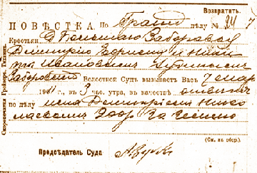

Chapter 3
A Day at Court

Front of a summons sent out by the Zaborovskii township court, Novgorod province, March 4, 1911.
Click to enlarge image.
This chapter considers due process at township courts, the kinds of people who could be found there, and the complaints and accusations they presented. My analyses and descriptions are based on two kinds of sources–cases in my surveys and statistics kept by imperial authorities. Books kept by township clerks allow a reconstruction of a day at a township court, with its docket of civil and criminal hearings. Clerks’ records reveal the outcomes of cases, the amounts of suits and fines, the length of jail terms, and the dispatch with which decisions were fulfilled. The final section of the chapter surveys the numbers of cases and kinds of matters that were decided at township courts from 1905 through 1914. The different angles of vision offered by local and provincial records converge to illuminate basic elements of court practice in the early twentieth century.
The charts and tables on the site present data and calculations relevant to several aspects of rural court practice. Matters considered here are the estate status of plaintiffs, defendants, and witnesses in my case survey; the provenance of cases brought to two higher appeal levels; the length of time between registering a case and a case hearing at various township courts; the distance from all settlements in a township to the village where court cases where heard (the township seat), measured for all villages in my study, and in different provinces; the distance to court for plaintiffs and for defendants in court cases; the number of cases decided in a calendar year in township courts of Moscow Province; the percent of cases in which witnesses appeared and the number of witnesses in cases (before the outbreak of the war); the amount of fines assigned in Moscow Province township courts before the war; the time between court decisions and fulfillments of various kinds of decisions (payments in civil cases, fines, or terms of arrest); and the average number of cases processed by a township court in Moscow Province, from 1905-1914.
Documents
© 2004 Jane Burbank, New York University
with permission from Indiana University Press
{kind=link}
{kind=link}
{kind=link}
{kind=link}
{kind=link}
{kind=link}